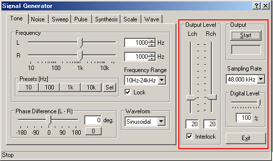

DSSF3 > RA > Reference Manual

| Name | Description |
|---|---|
| Output Level | Adjustment of the analogue output level after the D/A converter. When the [Interlock] box is checked, left and right channels are outputted as the same level. This control is linked with the Windows' volume control. |
| Output | The output of sound signals starts by clicking the [Start] button. There is a stopwatch function. Time counter starts by clicking on the [Start] button and the time counter is displayed here during the output. The count lasts until the output is finished. |
| Sampling Rate | Number of sampling per second. Hardware is automatically checked and the available sampling rate is displayed. Generally, it is enough to use 44 kHz or 48 kHz. |
| Digital Level | Controls the output level of the digital signal that is fed into the D/A converter. This volume should be reduced if the output signal is distorted. |
| Exit | Signal Generator program finishes. |
DSSF3 > RA > Reference Manual